<% meta("../meta.json") %><% meta() %><% url = url + "/about/"; %>
<%= render("../_partials/header.html", { title, description, url }) %>

<div class="about" data-progress data-toc="h2">

<header class="page-header about-hero">
<p class="eyebrow reveal"><span class="status-dot" aria-hidden="true"></span>About</p>
<h1 class="page-title reveal-1" style="margin-top: 0.9rem;">Hi, I'm Araharan.</h1>
<p class="page-lead reveal-2">I'm an engineer who builds and secures AI-powered products end to end. I write the backend services, ship LLM features and agents into real environments, run the pipelines that deploy them, and make sure all of it holds up against attack.</p>
<div class="hero-actions reveal-3">
<a href="#contact" class="btn btn-primary">Get in touch</a>
<a href="/posts/" class="btn btn-ghost">Read my writing <span class="arrow" aria-hidden="true">&rarr;</span></a>
</div>
<dl class="fact-grid reveal-4">
<div class="fact"><dt class="fact__label">I work across</dt><dd class="fact__value">Backend, AI, MLOps &amp; security</dd></div>
<div class="fact"><dt class="fact__label">Code</dt><dd class="fact__value">Java, Python, Go, TypeScript</dd></div>
<div class="fact"><dt class="fact__label">Education</dt><dd class="fact__value">MSc Cyber Security (UWL), BSc (Hons) IT (UoM)</dd></div>
<div class="fact"><dt class="fact__label">Currently</dt><dd class="fact__value">Pursuing OSCP &amp; AI red-team certs</dd></div>
</dl>
</header>

<section class="section about-section" id="connected">
<h2 class="section-title">How it all connects</h2>
<p class="section-lead">Most teams hire for these as separate roles and lose context at every handoff. I work across the whole path, from the first commit to production, and each layer makes me better at the others.</p>
<ol class="stack">
<li class="card stack__item">
<span class="stack__num" aria-hidden="true">01</span>
<div>
<h3>Backend engineering</h3>
<p>Services, APIs, and microservices in Java (Spring Boot), Go, Python, and TypeScript, designed to be secure and observable from day one.</p>
<p class="stack__link">Building here is how I learned where vulnerabilities actually hide.</p>
</div>
</li>
<li class="card stack__item">
<span class="stack__num" aria-hidden="true">02</span>
<div>
<h3>AI engineering</h3>
<p>LLM features, RAG pipelines, and tool-using agents with LangChain and LangGraph, built alongside the people who use them and deployed into their environments.</p>
<p class="stack__link">Shipping agents first-hand shows me exactly how they fail under real inputs.</p>
</div>
</li>
<li class="card stack__item">
<span class="stack__num" aria-hidden="true">03</span>
<div>
<h3>MLOps &amp; platform</h3>
<p>Pipelines that build, evaluate, and ship models and services: containers, Kubernetes, infrastructure as code, CI/CD, and the monitoring to run them reliably.</p>
<p class="stack__link">The pipeline is the supply chain, so models and dependencies need provenance too.</p>
</div>
</li>
<li class="card stack__item">
<span class="stack__num" aria-hidden="true">04</span>
<div>
<h3>Security</h3>
<p>Application security, AI red-teaming, and detection engineering, plus cloud security architecture: designing IAM, network, and workload boundaries across AWS, Azure, and GCP that hold up under real adversary behaviour, not just a compliance checklist.</p>
<p class="stack__link">Because I build the system, security is designed in rather than bolted on.</p>
</div>
</li>
</ol>
<div class="roles">
<p class="roles__label">Roles I step into</p>
<div class="chips"><span class="chip chip--strong">Backend Engineer</span><span class="chip chip--strong">AI Engineer</span><span class="chip chip--strong">Forward Deployed Engineer</span><span class="chip chip--strong">MLOps Engineer</span><span class="chip chip--strong">Security Engineer</span><span class="chip chip--strong">Application Security Engineer</span></div>
</div>
</section>

<section class="section about-section" id="story">
<h2 class="section-title">My story</h2>
<div class="about-body">
<p>I sit at the point where <strong>building software and securing it</strong> become the same job. Day to day, that spans backend and application development, AI engineering, MLOps and platform work, application security, adversary emulation, cloud security architecture, and DevSecOps.</p>
<p>Over the past few years, agentic AI systems (LLM orchestrators, tool-using agents, RAG pipelines, and multi-agent frameworks) have moved into production faster than the security around them. Prompt injection, principal-hierarchy confusion, tool misuse, and data exfiltration through benign-looking function calls are not theoretical. I build these systems, red-team them, and turn what I find into patterns and playbooks engineering teams can actually use.</p>
<p>On the classical side, I work across application and cloud security architecture (designing landing zones, IAM boundaries, and network segmentation before a single workload ships), SIEM engineering, threat hunting, and red-team operations against hybrid and Kubernetes-orchestrated containerised estates. I'm as comfortable writing a Spring Boot service or a Go microservice as I am auditing one, npm supply chain included.</p>
<p>Right now I'm learning about LLM serving internals, going deeper on vLLM specifically: how continuous batching keeps GPUs busy at the iteration level instead of the request level, how PagedAttention manages the KV cache in non-contiguous blocks to kill memory fragmentation, and how speculative decoding uses a small draft model to cut decode latency without touching output quality. It's the same instinct as everything else here: understand the system well enough to build it before trying to secure it.</p>
<p>I studied at the <strong>University of West London</strong> and the <strong>University of Moratuwa</strong>. Outside of paid work, I compete on Hack The Box, play CTFs, mentor analysts breaking into the field, and spend a lot of time messing with LLMs, open-source models, and building agentic AI applications for the fun of it. This blog is where I publish what I learn.</p>
<p>I think of my career as one long build, each project adding a layer I carry into the next: a bit more depth on the engineering side, a bit more instinct for where things break. I stay curious about what's ahead of the curve while keeping the work grounded and shippable. Have a look at what I've built, and reach out if anything here resonates.</p>
</div>
</section>

<section class="section about-section" id="education">
<h2 class="section-title">Education</h2>
<div style="display:grid;grid-template-columns:repeat(auto-fit,minmax(220px,1fr));gap:2.5rem;margin-top:1.75rem;max-width:640px;">
<div style="text-align:center;">
<p style="font-size:0.78rem;font-weight:700;letter-spacing:0.04em;text-transform:uppercase;color:var(--accent);margin:0 0 1.1rem;">MSc Cyber Security</p>

<p style="font-size:0.9rem;color:var(--fg-muted);line-height:1.6;margin:1.1rem 0 0;">University of West London<br>London, UK</p>
</div>
<div style="text-align:center;">
<p style="font-size:0.78rem;font-weight:700;letter-spacing:0.04em;text-transform:uppercase;color:var(--accent);margin:0 0 1.1rem;">BSc (Hons) Information Technology</p>

<p style="font-size:0.9rem;color:var(--fg-muted);line-height:1.6;margin:1.1rem 0 0;">University of Moratuwa<br>Moratuwa, Sri Lanka</p>
</div>
</div>
</section>

<section class="section about-section" id="ai-security">
<h2 class="section-title">Securing AI systems</h2>
<p class="section-lead">When models call tools, browse the web, execute code, and chain decisions across long context windows, a new attack surface appears. Building with LangChain and LangGraph gives me an engineer's view of it, not just an auditor's. What I look for:</p>
<ul class="feature-list">
<li><span class="feature-list__title">Prompt &amp; indirect injection</span><span class="feature-list__desc">Attacker-controlled content reaching an agent through tool outputs, retrieved documents, emails, or web pages, and hijacking what it does next.</span></li>
<li><span class="feature-list__title">Tool misuse &amp; privilege escalation</span><span class="feature-list__desc">Over-permissioned agents manipulated into SSRF, unintended data reads, or lateral movement through connected services.</span></li>
<li><span class="feature-list__title">Principal hierarchy confusion</span><span class="feature-list__desc">Multi-agent pipelines where a compromised sub-agent escalates permissions or forges instructions to its orchestrator.</span></li>
<li><span class="feature-list__title">RAG poisoning</span><span class="feature-list__desc">Corrupted knowledge bases that steer retrieved context, and with it the model's output, toward attacker goals.</span></li>
<li><span class="feature-list__title">Model supply-chain risk</span><span class="feature-list__desc">Malicious weights, backdoored fine-tunes, and unsafe serialisation formats such as Pickle.</span></li>
<li><span class="feature-list__title">Exfiltration via inference</span><span class="feature-list__desc">Covert channels through token counts, timing, or benign-looking tool-call parameters.</span></li>
</ul>
<p class="callout">Findings are mapped to the <strong>OWASP Top 10 for LLM Applications</strong> and <strong>MITRE ATLAS</strong>, and backed by test harnesses that keep probing pipelines as models and prompts change.</p>
</section>

<section class="section about-section" id="appsec">
<h2 class="section-title">Application security engineering</h2>
<p class="section-lead">Finding vulnerabilities is half the job. The other half is building the systems and habits that stop them from shipping.</p>
<div class="feature-grid">
<div class="card feature-card"><h3>Secure SDLC ownership</h3><p>Lightweight, measurable practices from requirements to release, plus paved roads: reference architectures, secure templates, and approved libraries.</p></div>
<div class="card feature-card"><h3>CI/CD security automation</h3><p>SAST, DAST, SCA, secrets, and IaC/container scanning with risk-based gates, tuned rules, and clear developer feedback.</p></div>
<div class="card feature-card"><h3>Security code review</h3><p>Authentication, authorisation, sessions, crypto, input validation, and business logic, with concrete fixes and secure patterns.</p></div>
<div class="card feature-card"><h3>API &amp; service security</h3><p>OAuth/OIDC, token handling, rate limiting, schema validation, and anti-abuse, verified with contract tests and targeted DAST.</p></div>
<div class="card feature-card"><h3>Threat modelling</h3><p>Pragmatic design reviews that produce mitigations, backlog items, acceptance criteria, and test cases, with privacy by design.</p></div>
<div class="card feature-card"><h3>Supply chain (SCA &amp; SBOM)</h3><p>Dependency triage and upgrade strategy, SBOMs as assurance evidence, and provenance checks for third-party components.</p></div>
<div class="card feature-card"><h3>Vulnerability lifecycle</h3><p>One intake for scanners, pen tests, and bug bounty. SLAs by severity and exploitability, tracked with MTTD, MTTR, and reopen rate.</p></div>
<div class="card feature-card"><h3>Targeted testing</h3><p>Risk-based, hands-on testing of web apps, APIs, and auth flows to prove real exploitability and drive prioritised fixes.</p></div>
</div>
</section>

<section class="section about-section" id="toolkit">
<h2 class="section-title">Toolkit</h2>
<p class="section-lead">What I reach for most often, grouped by the layer it serves.</p>
<div class="toolkit">
<div class="toolkit__row"><span class="toolkit__label">Languages</span><div class="chips"><span class="chip">Java</span><span class="chip">Python</span><span class="chip">Go</span><span class="chip">TypeScript</span><span class="chip">Bash</span><span class="chip">PowerShell</span></div></div>
<div class="toolkit__row"><span class="toolkit__label">Backend &amp; APIs</span><div class="chips"><span class="chip">Spring Boot</span><span class="chip">Node.js</span><span class="chip">React</span><span class="chip">Microservices</span><span class="chip">REST APIs</span><span class="chip">OAuth / OIDC</span><span class="chip">JWT</span></div></div>
<div class="toolkit__row"><span class="toolkit__label">AI engineering</span><div class="chips"><span class="chip">LLM applications</span><span class="chip">RAG</span><span class="chip">Agents &amp; tool use</span><span class="chip">LangChain</span><span class="chip">LangGraph</span><span class="chip">MCP</span></div></div>
<div class="toolkit__row"><span class="toolkit__label">MLOps &amp; platform</span><div class="chips"><span class="chip">Docker</span><span class="chip">Kubernetes / EKS</span><span class="chip">Terraform</span><span class="chip">Helm</span><span class="chip">Ansible</span><span class="chip">GitHub Actions</span><span class="chip">GitLab CI</span><span class="chip">Jenkins</span><span class="chip">Observability</span></div></div>
<div class="toolkit__row"><span class="toolkit__label">DevSecOps</span><div class="chips"><span class="chip">Snyk</span><span class="chip">Trivy</span><span class="chip">Grype</span><span class="chip">Syft</span><span class="chip">Checkov</span><span class="chip">tfsec</span><span class="chip">KICS</span><span class="chip">Gitleaks</span><span class="chip">TruffleHog</span><span class="chip">Dependabot</span><span class="chip">OWASP Dependency-Check</span><span class="chip">Cosign / Sigstore</span><span class="chip">OPA / Conftest</span><span class="chip">Kyverno</span><span class="chip">Falco</span><span class="chip">SLSA</span></div></div>
<div class="toolkit__row"><span class="toolkit__label">Cloud</span><div class="chips"><span class="chip">AWS</span><span class="chip">Azure</span><span class="chip">GCP</span><span class="chip">IAM at scale</span><span class="chip">GuardDuty</span><span class="chip">Security Hub</span><span class="chip">Defender for Cloud</span><span class="chip">Key Vault</span><span class="chip">Cloud Armor</span></div></div>
<div class="toolkit__row"><span class="toolkit__label">AI security</span><div class="chips"><span class="chip">LLM red-teaming</span><span class="chip">RAG security</span><span class="chip">OWASP LLM Top 10</span><span class="chip">MITRE ATLAS</span></div></div>
<div class="toolkit__row"><span class="toolkit__label">Application security</span><div class="chips"><span class="chip">Semgrep</span><span class="chip">SonarQube</span><span class="chip">CodeQL</span><span class="chip">Burp Suite</span><span class="chip">OWASP ZAP</span><span class="chip">SCA &amp; SBOM</span><span class="chip">HashiCorp Vault</span></div></div>
<div class="toolkit__row"><span class="toolkit__label">Detection &amp; response</span><div class="chips"><span class="chip">Splunk</span><span class="chip">Microsoft Sentinel</span><span class="chip">Elastic</span><span class="chip">MITRE ATT&amp;CK</span><span class="chip">Incident response</span></div></div>
<div class="toolkit__row"><span class="toolkit__label">Offensive</span><div class="chips"><span class="chip">Nmap</span><span class="chip">Amass</span><span class="chip">Subfinder</span><span class="chip">Shodan</span><span class="chip">SQLMap</span><span class="chip">Metasploit</span><span class="chip">BloodHound</span><span class="chip">Prowler</span><span class="chip">ScoutSuite</span></div></div>
<div class="toolkit__row"><span class="toolkit__label">Standards</span><div class="chips"><span class="chip">NIST CSF</span><span class="chip">CIS Controls</span><span class="chip">ISO 27001/27002</span><span class="chip">SOC 2</span><span class="chip">PCI DSS</span><span class="chip">GDPR</span><span class="chip">OWASP Testing Guide</span></div></div>
</div>
<div class="tech-carousel" aria-label="Technologies I work with">
<div class="tech-carousel__track">
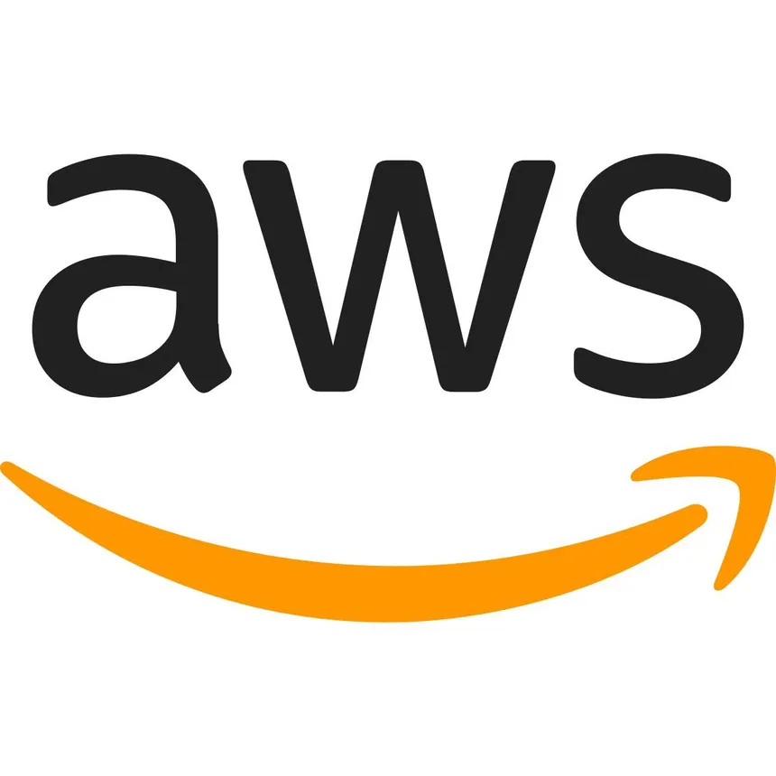
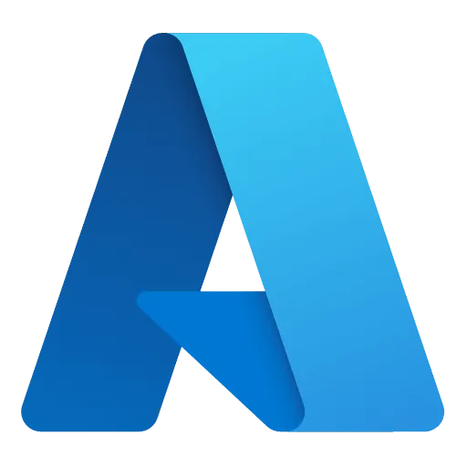
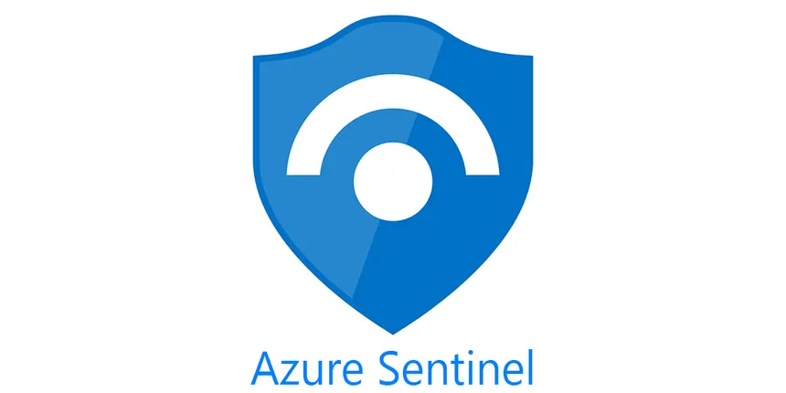
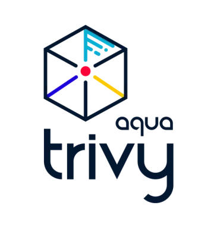
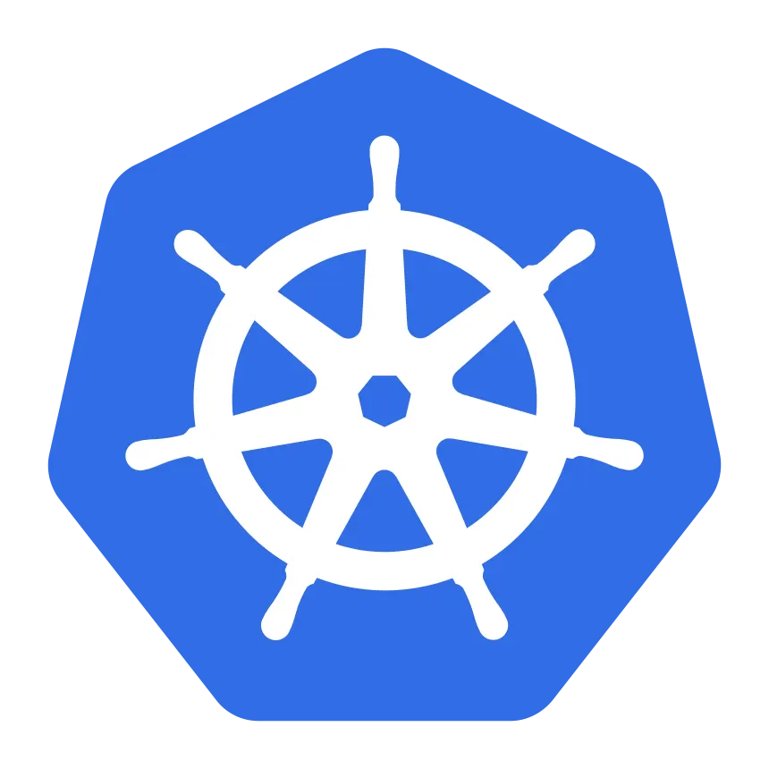
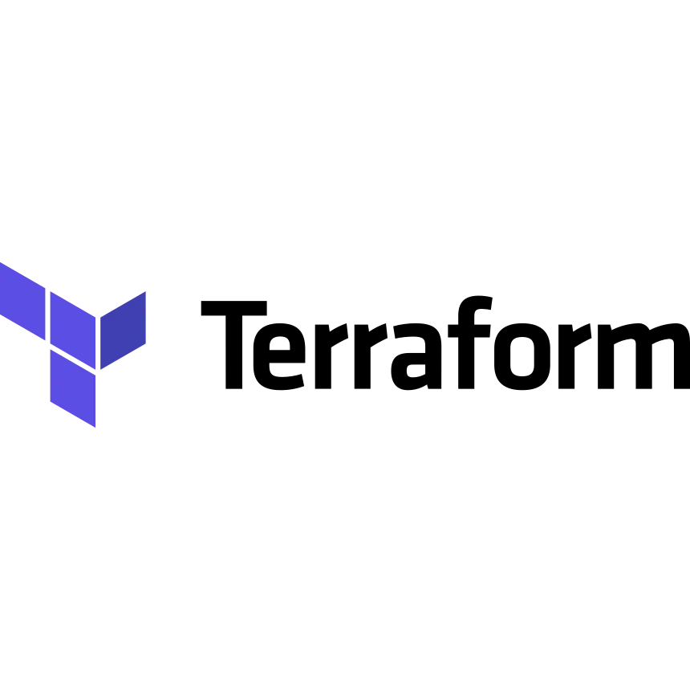
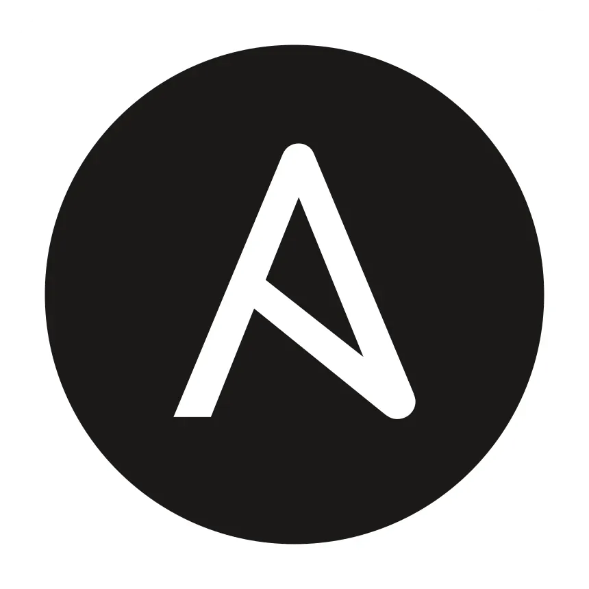
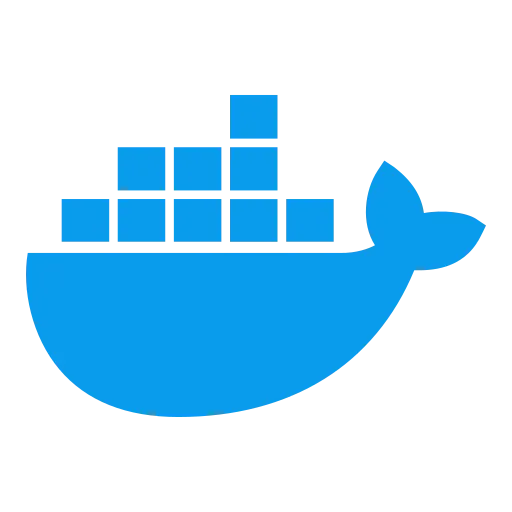

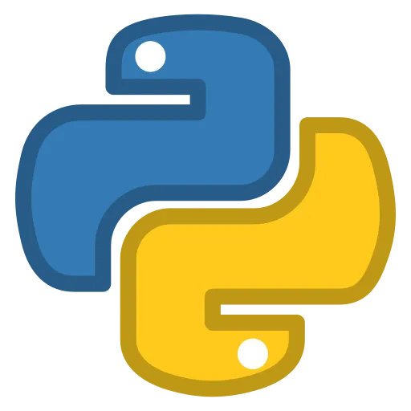

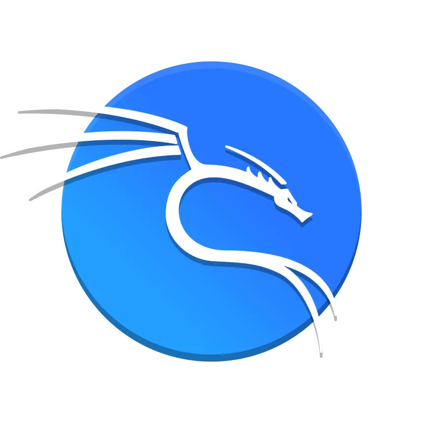
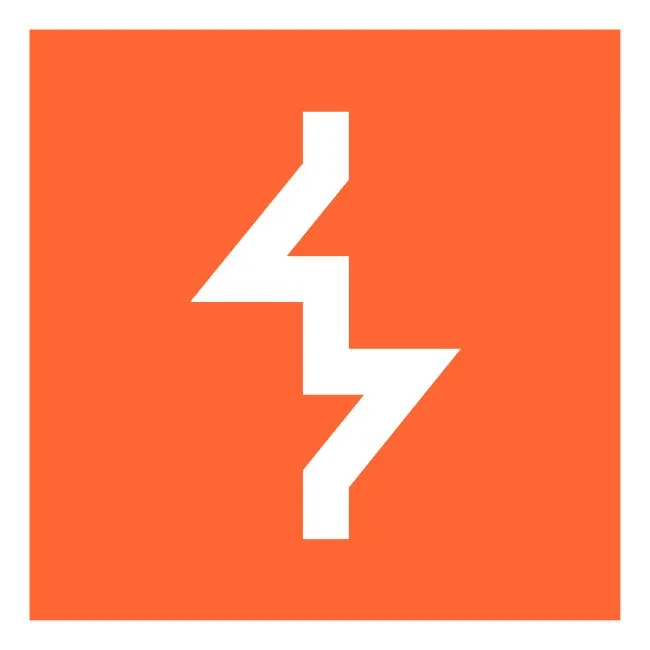

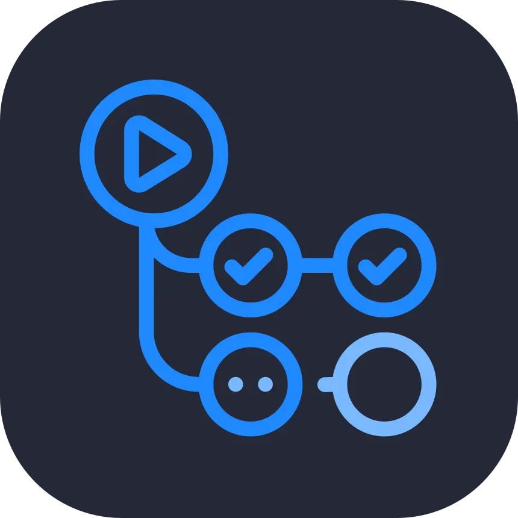


</div>
</div>
</section>

<section class="section about-section" id="services">
<h2 class="section-title">How I can help</h2>
<p class="section-lead">Whether you need someone to build it, ship it, run it, or secure it. Engagements are scoped together, so the work fits your needs rather than a template.</p>
<div class="feature-grid">
<div class="card feature-card"><h3>Backend engineering</h3><p>Services, APIs, and microservices in Java (Spring Boot), Go, Python, and TypeScript, with security designed in from day one.</p></div>
<div class="card feature-card"><h3>AI product engineering</h3><p>LLM features, RAG, and agent workflows built with your team and deployed into your environment, from prototype to production.</p></div>
<div class="card feature-card"><h3>MLOps &amp; platform engineering</h3><p>Pipelines that build, evaluate, and ship models and services, on containers, Kubernetes, and infrastructure as code.</p></div>
<div class="card feature-card"><h3>AI &amp; LLM security assessments</h3><p>Threat modelling, red-teaming, and hardening for agentic pipelines, RAG systems, MCP servers, and LLM-integrated apps.</p></div>
<div class="card feature-card"><h3>Application security engineering</h3><p>Secure SDLC design, CI/CD security automation, code review, API security, and vulnerability management.</p></div>
<div class="card feature-card"><h3>Penetration testing &amp; adversary emulation</h3><p>Realistic attack paths against cloud-native and hybrid environments, reported in terms engineers can act on.</p></div>
<div class="card feature-card"><h3>DevSecOps &amp; site reliability</h3><p>IaC reviews, pipeline security gates, secrets management, supply-chain hardening, and release and operations practices that stay reliable.</p></div>
<div class="card feature-card"><h3>Threat detection uplift</h3><p>SIEM tuning, detection rules, hunting runbooks, and incident-response playbooks.</p></div>
</div>
<p class="callout">I also run workshops, give talks, and mentor teams entering cybersecurity or adopting AI responsibly.</p>
</section>

<section class="section about-section" id="clients">
<h2 class="section-title">Worked with</h2>
<div class="logo-grid">
<div class="card logo-tile"><span>Alnylam Pharmaceuticals</span></div>
<div class="card logo-tile"><span>CACEIS</span></div>
<div class="card logo-tile"><span>Cambrex</span></div>
<div class="card logo-tile"><span>Cr&eacute;dit Agricole</span></div>
<div class="card logo-tile"><span>HCLTech</span></div>
<div class="card logo-tile"><span>SenzMate IoT Solutions</span></div>
<div class="card logo-tile"><span>Teceze</span></div>
<div class="card logo-tile">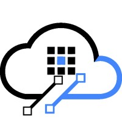<span>Cloud platform client</span></div>
</div>
</section>

<section class="section about-section" id="contact">
<h2 class="sr-only">Get in touch</h2>
<div class="card contact-card">
<p class="eyebrow" style="justify-content: center;">Get in touch</p>
<h3 style="margin-top: 0.6rem; font-size: 1.5rem; letter-spacing: -0.03em;">Let's build something secure.</h3>
<p>I'm open to engineering roles, consulting engagements, conference talks, and collaborative research, especially work that spans building AI systems and securing them.</p>
<div class="hero-actions">
<a href="https://www.linkedin.com/in/dream4ip/" class="btn btn-primary" rel="me noopener">Message me on LinkedIn</a>
<a href="https://github.com/haranloga" class="btn btn-ghost" rel="me noopener">GitHub</a>
<a href="https://twitter.com/haran_loga" class="btn btn-ghost" rel="me noopener">X / Twitter</a>
</div>
</div>
</section>

</div>

<%= render("../_partials/footer.html") %>
